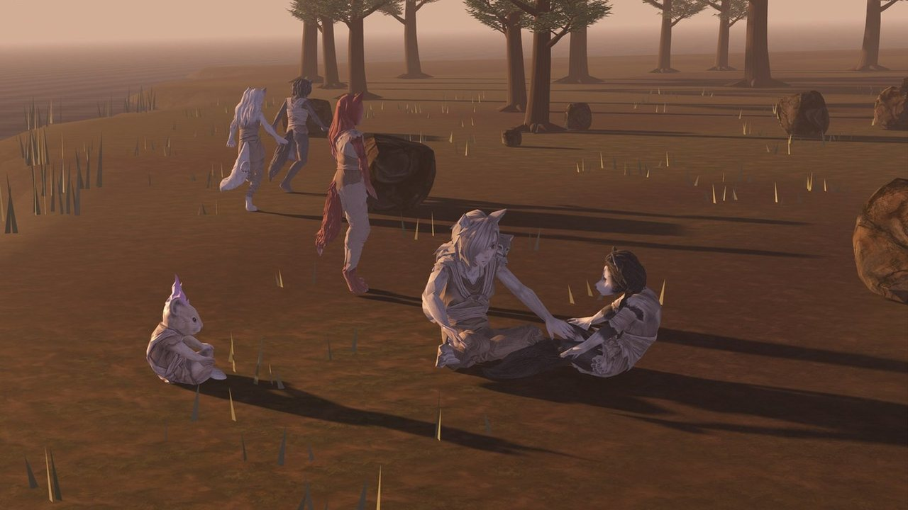
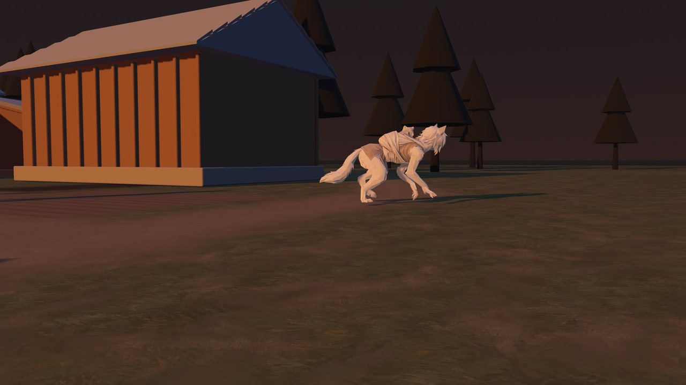

村は燃えていた。

タクティクス / PC(開発中)
人の村を追われた狼の母、ステラ。狩った獣を食べ、その獣の姿を受け継いだ子を産みながら、群れを率いて生き延びます。人間とは戦っても、殺しはしません。
- 食べた獣が、子の姿になる熊を食べれば熊の毛の子が、亀を食べれば甲羅を持った子が生まれる。
- 母が倒れたら、群れが終わる子を前に出すか、自分が盾になるか。一手ごとに選ぶ。
- 物語と曲は作り手のもの物語の文章は作り手が書き、曲も作り手が作曲しています。地面の質感やモデルの一部に生成 AI を使っており、どこまでが AI かは制作記録の第6回で公開しています。




制作記録は YouTube で、火・金・日に出しています。
YouTube で制作記録を見るステラは狼である。
Salon der Glut
開発中